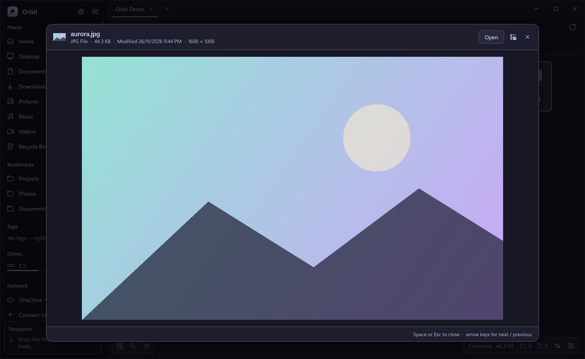

Quick Preview
SpaceSelect any file and tap Space. Glide through the folder with ← →, close with Space or Esc, or click Open.

Picturesjpg, png, gif, bmp, tiff, ico, webp, heic, avif, jxr, dds
Text & Codetxt, md, json, xml, yaml, toml, ini, log & source code
PDF & MediaWindows native PDF engine · inline mp3/flac/mp4/mkv/webm
ZIP & FoldersPeek inside ZIP archives or inspect folder contents